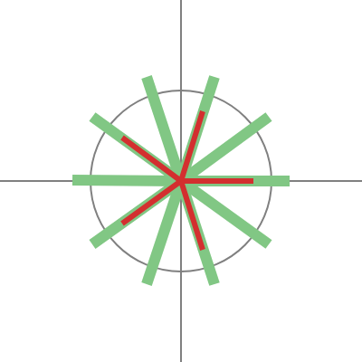
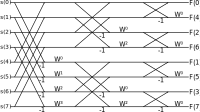
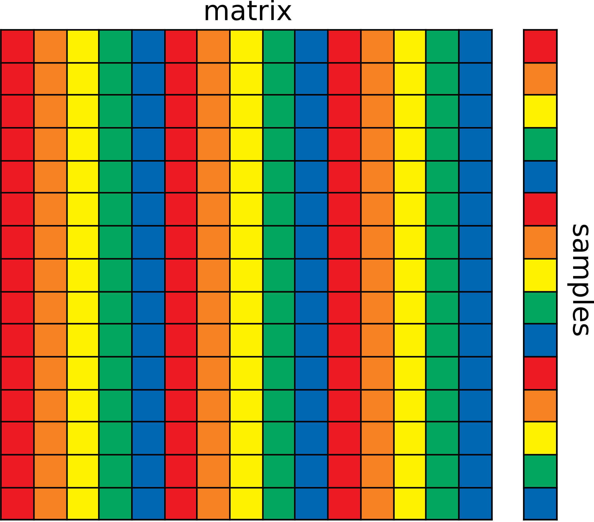
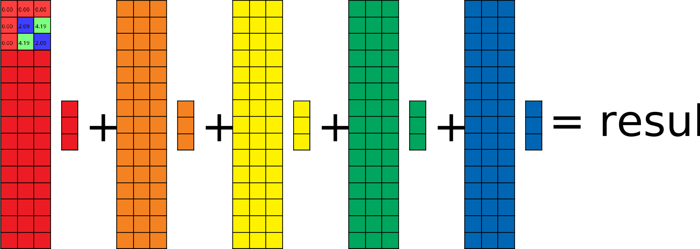
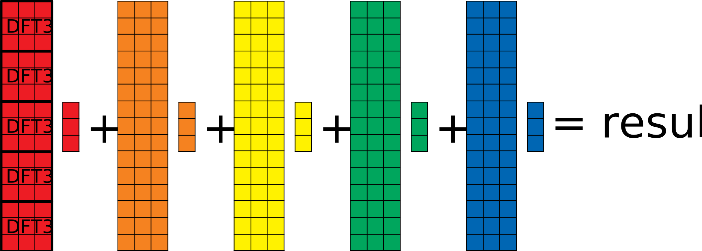
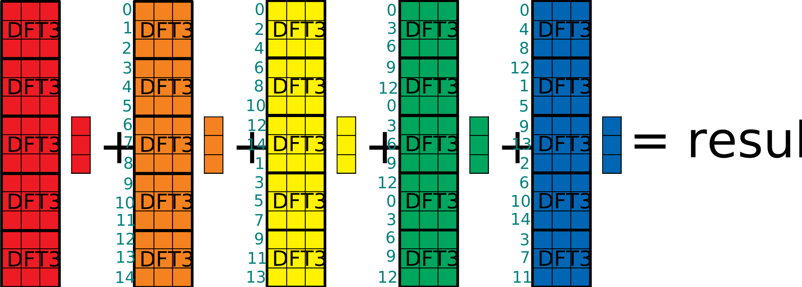
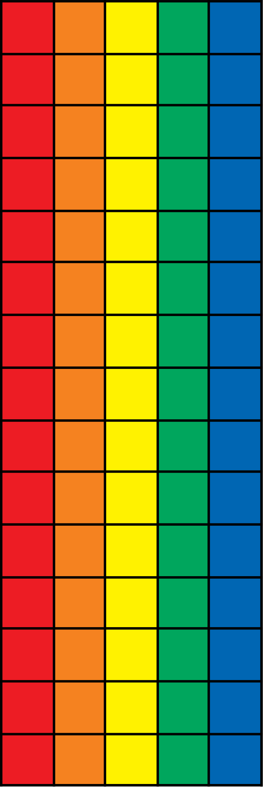
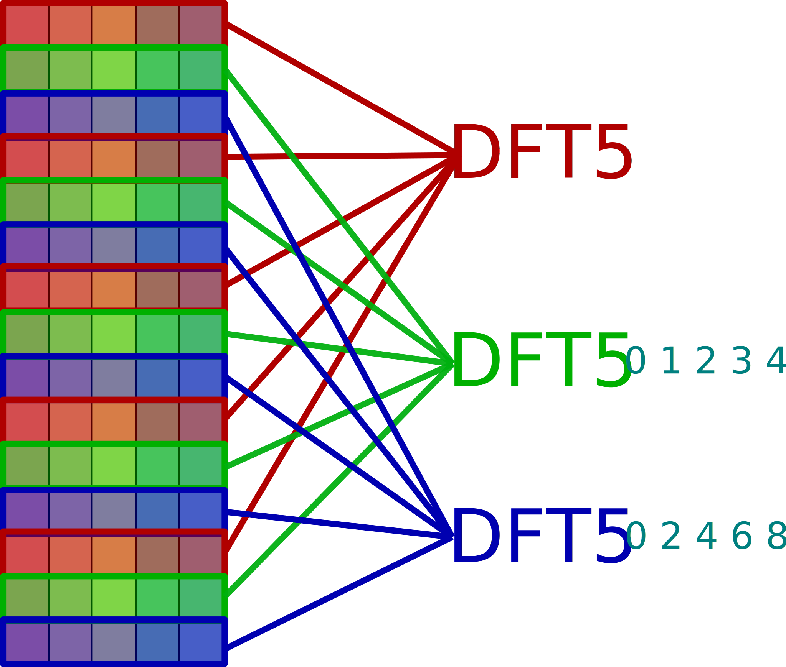
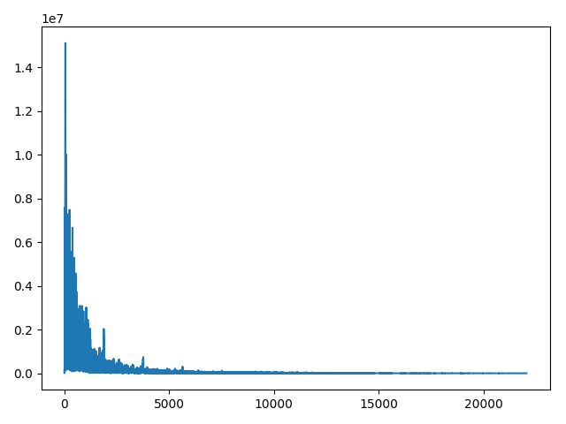
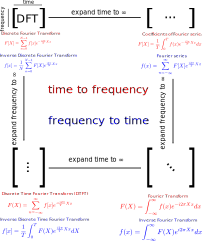

{{ title }}
In the previous part, we showed how we could build signals from sinusoids, and how to analyse built signals to get their components back. Inverting the matrix using Gaussian elimination showed to be really slow but we could accelerate that using the easily invertible DFT matrix. Much faster, right? Multiplying an n by n matrix with an n long vector is an O(n^2) operation. With a 1 second long signal and a sample rate of 44100 Hz, that still means 1 944 810 000, almost two billion steps.
Going faster
Take a look at the DFT matrix defined before. Now instead of the powers of W, the angles in radians will be shown for each element.
Complex functions are often plotted with domain coloring but this is not the case now. From zero to π, the whole range of hues are covered with a bright saturation. From π to 2π (with π included but 2π aka 0 is not) the same range is covered buth with a slightly lower saturation. As result, points at the opposite side of the circle will share the same hue and they'll only differ in saturation.
With this way of coloring, you might notice some sort of symmetry in the DFT matrices. For example for even cases they are made up from four similarly colored parts. But the symmetry we are going to exploit is a bit more subtle, so we need to cover some elements first.
If we cover or ignore each even column, the remaining elements will show symmetry vertically, top and bottom is identical which means that the submatrix from the top five rows will be exactly the same as the bottom five rows in this size 10 DFT case.
Alternatively we can cover each odd column as well. In that case the symmetry is a bit weaker, the elements at top and bottom will be shown with the opposite color of the colorwheel, bright colors turn into dull ones and vice versa. You might also say that the difference of their angles is π.
When we are applying the Discrete Fourier Transform to a signal, we multiply it with the DFT matrix. For this purpose we can split this matrix into two smaller ones. The original multiplication with a size six DFT matrix:
The amplitude was marked with C, so we could use A and B after splitting (C is the sum of A and B):
What did we gain from that? Nothing, as matrix multiplication is just regular multiplication and summation, and we could have done this splitting for any matrix we wanted to; the gains come now.
- Step one: Maybe you are already seeing it, but this is the first important discovery. If we leave out every even column and select the first half of the rows, we get back a DFT matrix with half the original size; in this case from a DFT sized six we get a smaller three sized matrix:
- Step two: As we said earlier the submatrix with the evens skipped is exactly symmetric, which means we can paste this same 3 sized DFT below the original. This also changes (simplifies) the partial results, A1 = A4, A2 = A5 and A3 = A6.
- Step three: Tricky part again, because we have mixed additional and "regular" angles. It would be nice if we could encode the second part into smaller DFT matrices as well, but the angles just look way off.
- Step three and a half: Turns out we can actually generalize this idea through the whole second part:
- Step four: But that's kind of ugly. And we've seen that there is still some sort of symmetry here. Turning a color to its opposite saturation equals to the complex number behind it's additive inverse. And since we can do the DFT part before applying the twiddle factors, we can use the results B1, B2, and B3 to calculate the rest.
This is no coincidence, the angles of an even sized DFT matrix are the same as the angles of halved size matrix, with some additional angles. Taking only each second element results in frequencies which skip the odd angles. You can see this with a DFT sized 10: As a side note even and odd were used pretty vaguely here, when we covered odd columns, we covered the first, third.. and so on where first meant literally the leftmost column. To be more precise, I should have referred to that column as the zeroth, and so the oddity would swap; but I found this unnatural and counterintuitive.
Visually the question is: how do we get from this state to here ? It's easy, shift it right!
Take a look at a non-simplified DFT matrix. What operation needs do be done to get from one element to its right neighbor?

Multiply it with the element in the second column and the same row! Or with the second row and the same column, it is symmetric, so it does not matter for single elements, but we are going to use this for whole columns, so stick with the first method.
So the size 3 DFT matrix is multiplied now with some twiddle factors before applied to our signal. This isn't matrix multiplication nor elementwise, since the sizes don't add up. You should multiply each element with the twiddle factor in the same row. It is not hard to prove that associativity still applies here so we can switch our order of operations. That way we can apply those twiddle factors after we completed our smaller DFT and so right now 3 out of 4 parts start with applying DFT to a smaller part of the signal.
How much speed did we gain from all of that? A regular DFT of size 10 does a matrix vector multiplication, which takes a hundred (complex!) multiplications and 90 additions. This brand new method method does two 5 sized DFTs (25*2 multiplications and 20*2 additions) and to combine the partial results, five additions and five substractions (which is computationally the same as addition). We roughly halved our computations.
Can we go further? Not really. Could we go further? I deliberately choose size 6 and 10 DFTs as our examples, since they are divisible by two but only once. In case we have a DFT with a size divisible by four, nothing prevents us to do additional speedups and so on with 8 or 16. This is called the radix two FFT and as the name suggests this works well with sizes being the powers of 2.
Radix two FFT
So we finally reached the Fast Fourier Transform. On a more complex example with more than one speedup possibility this is how it looks like (FFT 8):
The colors indicate the various DFTs shown earlier. This structure is called the butterfly diagram due to the resemblance of these X-like structures to butterflies. There are two things worth mentioning here.
- The colored lines represents vectors, except the leftmost column. If you ever saw a butterfly diagram for an 8 sized FFT, you probably noticed that there were way more crossing lines for that. We can extract our vectors into regular lines, but in my opinion this does not look much cleaner.
- The input is scrambled at the beginning. At the first (or last depending on your viewpoint; the one where we combined two 4 FFTs into one 8 sized) operation, we splitted our input data into odd and even parts. And again at which point we had groups with 4k, 4k+2, 4k+1 and 4k+3 numbers. Not a nice order, but what is worse, at the end, we have our input completely scrambled, seemingly without any sort of structure: 0, 4, 2, 6, 1, 5, 3, 7.
This is the butterfly diagram if we expand all vectors. Now we have do decide how to deal with this unnatural order of inputs.
- We don't care. If we do an out of place algorithm, which means we don't want our output overwrite the input, then we can just allocate a new buffer for the frequency components and then access our input in whatever manner we want.
- But sometimes we are constrained by limited memory, and having an algorithm which can perform in place is always a good thing. We can find some efficient way to scramble our input before applying the FFT itself.
- Lastly, we can leave our input unscrambled, but use an in place algorithm, in which case, the output will be scrambled. Maybe it's not a problem for you. This is called decimation in frequency whereas the earlier method was named decimation in time.
The third option is the easiest, you can see the difference on the butterfly diagram.
This scrambling is a permutation and we could use some permutation matrix, but this would be a terrible idea. We worked so hard so far to eliminate the use of matrix multiplication, then this close to the end, we introduce a new one... no. Turns out, this permutation is not random, it is actually the bit reversed order of the indices. This might come as a surprise, but take a deeper look and see how each bit corresponds in terms of odds and evens.
| Number | Bits | Rev. bits | New value |
|---|---|---|---|
| 0 | 000 | 000 | 0 |
| 1 | 001 | 100 | 4 |
| 2 | 010 | 010 | 2 |
| 3 | 011 | 110 | 6 |
| 4 | 100 | 001 | 1 |
| 5 | 101 | 101 | 5 |
| 6 | 110 | 011 | 3 |
| 7 | 111 | 111 | 7 |
How can we apply this? FFT is a widely used algorithm, and many solutions were developed over time, ranging form naïve bit reversal to bitwise hacks, reading from predefined tables or even memory which can be addressed by bit reversed order adresses as well. In most applications the size of the input and output is a fixed constant, and a lot of these techniques depend on this (for example the single byte bit reverse order only works with FFTs of size 256).
So here is an example code in C to demonstrate all of this in of place. This snippet uses the built in complex numbers of C. Also note how the actual FFT code (in fft_req()) is only like 10-12 lines, and the rest is reordering the input in bit reversed order. You may find more examples on this at rosettacode.org.
{{ code("fft_rad2.c", "c") }}This algorithm uses divide and conquer approach in a recursive manner. If you are familiar with sorting algorithms, this technique is probably familiar for you. Both quicksort and FFT halves the array and traces back the problem to two smaller ones. They share similarity in complexity as well, FFT is an O(nlogn) operation, where log indicates logarithm with base 2. That means our original problem with 44100 samples can be solved in (roughly) 680 396 steps. Well, thats feasible... or would be, only if 44100 happened to be a power of 2, which sadly isn't.
The Cooley-Tukey FFT
The question now is how can we accelerate the Discrete Fourier Transform for sizes that are not powers of two?. The most trivial answer is to pad it: add a point to the left or to the right of a 7 length sequence. As you can see the interpolated function - the one that we obtained from the Fourier coefficients - doesn't really change much. Also note because of the periodictity, we get the same coefficients regardless if we add the padding zero to the beginning or the end.
Of course, that's not a complete and perfect solution. For seven points, it is good enough, bit for nine? Should we use seven padding zero points? Or discard one? If we could split our even data into two parts, why can't we use the same principles and divide the samples by three or five or seven? Well the algorithm named after James Cooley and John Tukey does exactly this. Actually the radix 2 method is just a special case of that, but the most popular; if you look up the Cooley-Tukey algorithm on the internet, you will find dozens of these butterfly diagrams shown earlier.
The product of the two smallest primes, which are not two is 15, so we are going to use this size as our example. As you can see below, the DFT matrix of that size, is getting pretty large - no trivial symmetries in sight but the coloring resembles some kind of structure. To construct an efficient algorithm, we are going to do the same four steps as with the radix 2 case.

- Step zero: splitting. Before we made those simplifications to the radix two case, we shown that we could split our matrix and samples into even and odd parts. We can do the same just with 3K, 3K+1 and 3K+2. Or maybe with 5K, 5K+1, 5K+2, 5K+3, 5K+4. There is no particular reason to pick one over the other, so for now I'll use the 5K one now. 
- Step one: finding a small DFT in the top left corner. Yes, if you take a look at the size 15 DFT matrix and then the size 3 one, you can see that it fits. If it is still not clear why, you can check the coefficients in the red columns: 0/15, 5/15, 10/15, or in other words: 0/3, 1/3 and 2/3. 
- Step two: the rest of the remaining red submatrix can be also filled with DFTs as well. The reason behind that will be clearer once we reach step 3.5. 
- Step three: We can continue filling the rest of the columns with DFTs. Also don't forget to add twiddle factors now for orange: 1/15, 2/15, 3/15 and so on, for yellow 2/15, 4/15, 6/15.
- Step three and a half: With all the DFTs filled we can see the whole picture. Each color has its own twiddle factors (the red columns have 0/15 as twiddle factors which does not change anything). And we can finally see how we can gain computational speed: instead of doing a full 15 by 15 matrix multiplication (225 operations), or 25 times 3 by 3 DFTs, which is 225 operations as well, we only have to do one 3 by 3 DFT per each color, then get the rest of these values via twiddle factors. Finally all is left is a simple summation. 
- Step four: there is no step four. On the radix 2 case we could made additional speedups by substraction, but that is impossible with odd cases; for any angle, there is no valid counterpart which is exactly π radians (half a circle) away.
Now we can group the columns of the matrices and the samples by their respective color:

One thing remains now from understanding the whole Cooley-Tukey algorithm. It is only a matter of notation, no speedups can be gained from this, but we can apply the twiddle factors in a more sofisticated manner: in the form of 5 by 5 DFTs. After doing all the DFT3s in the previous image but before applying the twiddle factors, our columns look like this:
We can make the following observation: If we take each third line from the beginning (in natural order, the first, fourth, seventh, tenth and thirteenth) and look at their corresponding twiddle factors, they form a perfect 5 by 5 DFT matrix. We can generalize this further for rows 3K+1 and 3K+2 with further twiddle factors multiplied elementwise to the resulting legnth 5 vector. The twiddle factors of the twiddle factors...
So we did DFT3s 5 times and DFT5s 3 times. Even if we used a different splitting at the beginning (3 instead of 5) we would have got the same results. In the general case this algorithm requires the prime factorization of the number, for example for a 60 sized sample, we would do splits of 2, 2, 3 and 5 (in any order).
Summary
We covered discrete and fast Fourier transforms and the most basic algorithms, but there is still room to improve. Depending on your use case, you can take a look into how these algorithms work on special sizes, how they affect and use cache optimally without misses, how to reduce the number of required multiplactions further, how to implement in this in a hardware with high efficiency, how to run them in a highly parallelised environment and so on. For now, only a few not strictly related miscellaneous topics are remaining.
Miscellaneous topics
ifft
With regular DFTs applying the inverse transformation was as easy as the forward: a matrix multiplication. With these accelerations, can we do inverse FFT in O(nlogn) time? The answer is simple, yes, only the twiddle factors need to be modified. In the radix 2 case this is as simple as changing this line from this:
{{ code("forward_twiddle.c", "c") }}to this (no minus sign):
{{ code("inverse_twiddle.c", "c") }}Also since we said in the last part that we haven't done any normalization in the regular transform part, we have to do it now. So divide the result with the length of the samples!
A concrete example
You saw that all the Discrete Fourier Transform is to transform an input array into an output array. What if you have a sound file, and you want to work with its spectrum? If the wav file has 56000 samples and a sample rate of 8000, what frequency will the output array's 18457th element correspond to?
Pretty simple actually. If the sample rate was 1, it would be 18456 / 56000 = 0.330 Hz, also note how I substraced one from 18457, because the indexing starts from zero. If the sample rate is higher, then our measured frequencies will be higher as well, so the final answer is 18456 / 56000 * 8000 = 2637 Hz.
For a python example, let's suppose you have a wav file:
From freesounds.org; made by night_soundscapes; licensed under CC BY-NC 3.0. source
And the full code example below. We can use the fftfreq() method of numpy to generate all frequencies, even the repeated ones; and rfftfreq() to also do this, but this discards the later half. Or sums that to the first part to be more precise.
{{ code("rfftfreq.py") }}And on the plotted spectrum you can see the frequencies ranging from 0 to 22100:
Relation to regular Fourier transforms
In the very beginning of the first part I said that this article is an introduction for those who have no knowledge of regular Fourier transforsm, but chances are high that you have already seen one, or at least the definition of it (with maybe a slightly different notation).
{{ formula("fourier.tex", amsmath=False) }}
Some parts seem familiar, for example the exponential part, while I haven't ever mentioned integrals yet. What happens if we expand our DFT matrix to infinity? Note that this is not a precise operation and the only purpose of this is visual intuition.
As you can see we could increase our original DFT matrix in two dimension: one resulted in the Discrete-time Fourier Transform, while with the other we got the coefficents of the Fourier series, and when we combined them, we finally got the Fourier transform. Intuitively the summations turned into integrals, but there are lots of unexplained remarks here. How do we strech a matrix to infinity? From 0 to ∞? From -∞ to ∞? Between two given numbers but with infinite granuality? Also these concepts have deeper connections between them, like periodicity, which we haven't talked about, so the image above should only serve as a visual intuitive helper.
Sources
- Allen B. Downey: Think DSP; Green Tea Press (link)
- Ronald N. Bracewell: The Fourier Transform and its Applications third edition
- katjaas.nl
- ECSE-4530 Lectures by Rich Radke
- Gauss and the history of the fast Fourier transform